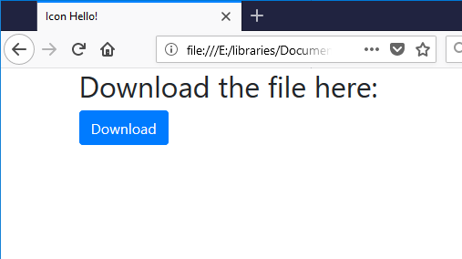
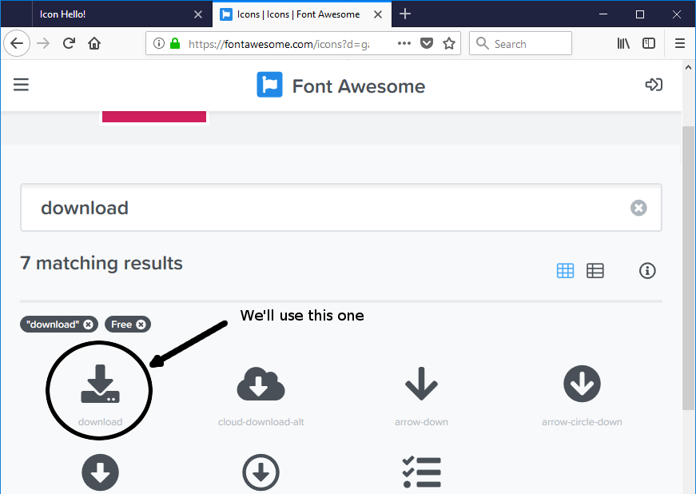
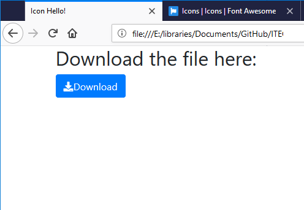

Buttons and Icons¶
To include everything there is to talk about in Bootstrap eventually begins to look like just listing all of the classes and showing examples of how they work. Once you have the basics down, there’s really little point in doing that since you can just browse the documentation to find the component you’re looking for.
But there is one other thing that warrants at least a brief tutorial: Icons. Bootstrap used to include an icon font by default, but in Bootstrap 4, it was removed. Instead, they recommend any number of icon fonts that are available (often for free) elsewhere and which have easy Bootstrap integration.
First of all, what do we mean by “icon”? Well, in modern design, an icon is a specialized graphical element which can convey meaning without being a word. We have been using icons for a long time. We all know that to save a document, you usually click on the icon that looks like an old-style computer disk. And there are some equally universal icons out there creating a sort of glyph meta-language.
A number of companies have made icons into a design language. For the sake of this tutorial, we will use the icon font designed by Font Awesome, since they are kind enough to use a CDN to distrubte it.
We’re going to see how to add icons to buttons and to use them as buttons in themselves. We’ll combine their functionality with Bootstrap for very nice results. So let’s get started.
Open your basic Bootstrap template and add the Font Awesome CDN to the
<head>element:<script defer src="https://use.fontawesome.com/releases/v5.0.6/js/all.js"></script>
Let’s start with a simple button. Let’s say you want to create a download link. You can do this in Bootstrap very easily:
1 2 3 4
<div class="container"> <h2>Download the file here:</h2> <a class="btn btn-primary" href="#">Download</a> </div>
This will create a pretty standard button:
Next, we want to create an icon which will add visual appeal and instant recognition to the button. First, we need to find a suitable icon to use. You’ve added the Font Awesome library of gliphy icons to the page, but there are over 900 free icons in the library. So, let’s go digging. Head over to their website and search through the free icons. For example, type the word “Download” into the search bar and see what comes up:
All you really need is to see the name of the icon which is right underneath it. However, if you click on the icon, it will show you some examples of the icon in action. Font Awesome’s recommended way of including an icon looks like this:
1
<i class="fas fa-download"></i>
Simply add this bit of code right into your link:
1
<a class="btn btn-primary" href="#"><i class="fas fa-download"></i>Download</a>
And observe the results:

{kind=link}
{kind=link}
{kind=link}
Note:¶
Font Awesome’s convention of using <i> tags to denote an icon is nice because it is brief succinct, however it is not semantically correct since that tag already has a semantic meaning in HTML. Technically, it would be more correct to use a <span> tag, however, you will almost certainly not notice any ill effects from using the i tag since the way Font Awesome’s JavaScript library works, it simply replaces the entire element with an <svg> element anyway. So use the i. It’s nice and simple.
Make it fancy¶
Font Awesome’s documentation is short but has plenty of interesting options for you to try.
And for the most part, they are accomplished simply by adding classes to the element with the icon. It’s as simple as that.
Among the features outlined in their documentation are:
Icons inherit CSS styling:
<div style="font-size:3em; color:GoldenRod"> <i class="fas fa-hand-spock"></i> </div>
Icons can be animated:
<div class="fa-3x"> <i class="fas fa-sync fa-spin"></i> </div>
They can also be resized, rotated, translated, and nested on top of each other. Experiment and see what you can create with icons. They’re basically the future of language at this point.